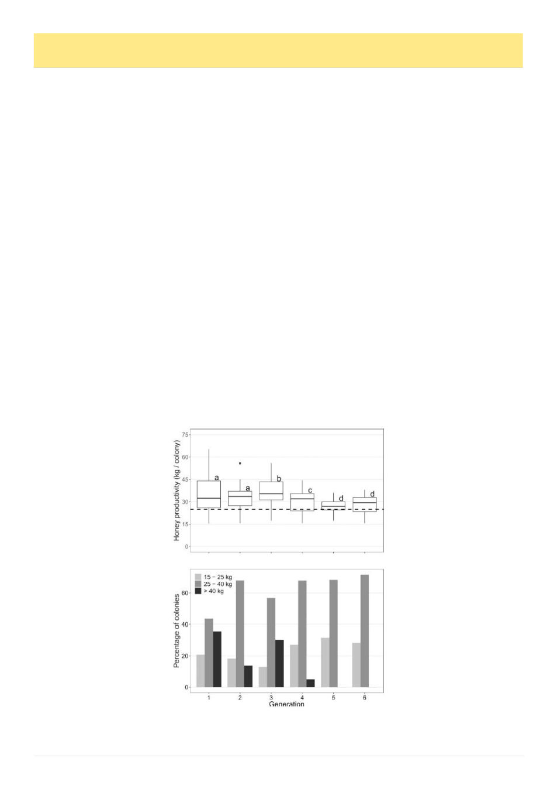

22
Australian Bee Journal
Beekeeping In Cuba, cont’d
at least one full harvest season (six months), each par-
ticipating province (11 of Cuba’s 15 provinces) would
run a self contained program without human-mediated
genetic exchange between provinces. 52 breeding sta-
tions were operated and in addition to directly breeding
bees they engaged to train beekeepers in queen breed-
ing.6
The first generation of selection began with each
province’s top beekeepers’ best hives, which were relo-
cated to the program apiaries. They were then carefully
monitored for six months for hygienic behavior. Varroa
levels were monitored in hives selected for breeding but
was not part of the selection criteria. Hives that exhibit-
ed excessive swarming, queen mortality, disease, weak-
ness or high aggressivity were excluded. The selection
program aimed to conform to the recommendations of
Buckler et al 2013 “Standard methods for breeding and
selection of Apis mellifera queens.”6
Essentially hives had to meet hygiene benchmarks
and from all those that met them further selection was
based on greatest honey production. 20-40 colonies per
province were selected to be bred from. The best colo-
ny was used to produce 100-200 drone mother colonies
at the breeding centers while eggs were grafted from the
other top hives. Subsequent generations were selected
from this stock.6
Between 2014 and 2023 1,191 breeding colonies
were selected from 4,857 candidates, creating six gener-
ations of queens. Though as mentioned varroa re-
sistance wasn’t an empha-
sized trait, the median infesta-
tion rate fell from 13.2 AWE
(4.4%) to 2.7 AWE (0.9%) by
the fifth generation. Interest-
ingly, while the text of Perez
2025 says they achieved an
upward trend of honey pro-
duction, the provided figures
don’t actually support that
assessment, at best it fluctuat-
ed. They do note that hives
of provinces involved in the
breeding program produced
more honey on average (45.9
kg / hive) than hives in prov-
inces
not
participating
(32.5kg / hive), but don’t give
us comparative production
prior to the programme com-
mencing so it’s entirely plau-
sible that the most productive
provinces participated and
these differences already ex-
isted. It is noted that the ap-
parent reduction of honey
production during the latter
part of the study may be ex-
plained by Covid-era move-
ment restrictions.6
So we’re still wondering when they banned the use
of acaricides. Let’s go back to earlier papers. As of
2012 we’re still seeing statements by Yoandra Valle,
director of the state honey company, Apicuba, that
keeping varroa levels low “could be helped by the use
of Integrated Pest Management, which includes the use
of … and varroicide treatments if the average [AWE]
reaches or exceeds 15.”19
So I just asked them. Jorge Demedio, author of the
much cited 2001 paper was kind enough to respond to
me. He does say (translated from Spanish like most of
the papers here) “I can assure you that while there were
some initial applications of Bayvarol, and to a lesser
extent, Apivar, none have been applied for over 20
years.” (Demedio pers. corr.)20
“The fact that our beekeeping industry was integrat-
ed into a large national company fostered uniformity
and mutual support throughout this work. On a more
specific technical level, the high degree of professional-
ism among beekeepers and the existence of some 80
queen bee breeding centers, supported by a comprehen-
sive training system, facilitated several key actions,
such as: epidemiological control, with the identification
of outbreaks, surveillance areas, and threatened zones;
clinical and laboratory diagnosis; traceability of hive
components and products; and selection of the most
productive hives, with lower infestation rates and high-
er levels of hygienic practices.”20
He also added:
“Like all the beekeepers I've met, we form a
global "guild" of good people, sensitive and passion-
ate about bees and, conse-
quently,
about
nature.
When, in 2000, I sent pho-
tos of the mites I had col-
lected for my thesis and
requested the assistance
of Dr. Dennis Anderson at
CSIRO, I will never forget
the speed and kindness
with which he responded
and the courtesy of send-
ing me a copy of his publi-
cation, which, among oth-
er things, recognized the
new mite species, Varroa
destructor Anderson and
Trueman, as the cause of
the major problem world-
wide. In my response to
you, I am trying to recip-
rocate the kindness shown
to me by your compatriot
26 years ago.”20
So what is to be concluded in
the end? Well the endlessly
repeated statement that “they
never used treatments in Cu-
ba” is plainly not true. There
appears to have been wide-
(Continued from page 21)
Average honey production of hives headed by queens
of the first six generations of the
Cuban Bee-CSIB queen breeding program.
(Continued on page 23)